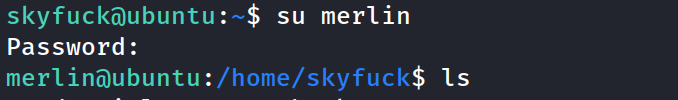

Started with nmap scan added --open, -p- and -A. Ports 8009 and 8080 initially stuck out.
Gobuster, nothing stood out to much except the potential manager dashboards potentially offering jsp upload vulns
Further enumeration port 8009 ajp
browsed to port 8080
/manager page gets unauthorized response
Used book hacktricks guide to attempt to bypass the block
https://book.hacktricks.xyz/network-services-pentesting/8009-pentesting-apache-jserv-protocol-ajp
Able to port the web app from 8009 through localhost and got to the credentials box, but no luck with default credentials, brute seemed premature, without username
book hacktricks provided another vector which might reveal credentials
!Found credentials using this method user: sk...: 87....
Firstly tried to ssh with the credentials. Yes, it worked!
Found 2 files right away. Looks like a pgp file and a decrytion key.
Decided to do some manual enum before pursuing the obvious path.
Not much...
Not much...crontabs...not much...
found another user name....the first flag is in that user home directory and is readable!
not much more here...
...not much in these
decided to run enum just because, I have the PGP vector but interested to see if anything else shows up. Not much here...this stands out due to kernel version running (4.4.0)but decided to put it to the side.
back to the path...copied the pgp into a file on kali machine
search for gpg2john to create a hash of the pgp key for cracking by john
search for john to crack the pgp hash
Found the passphrase to decrypt the pgp key
decrypted the key, the file contains the credentials of the other user: Merlin.
switched user to merlin

checked merlins sudo privileges and check GTFObins for the code to /usr/bin/zip
run the code. Oh yeah! Got root!
cat the root flag.